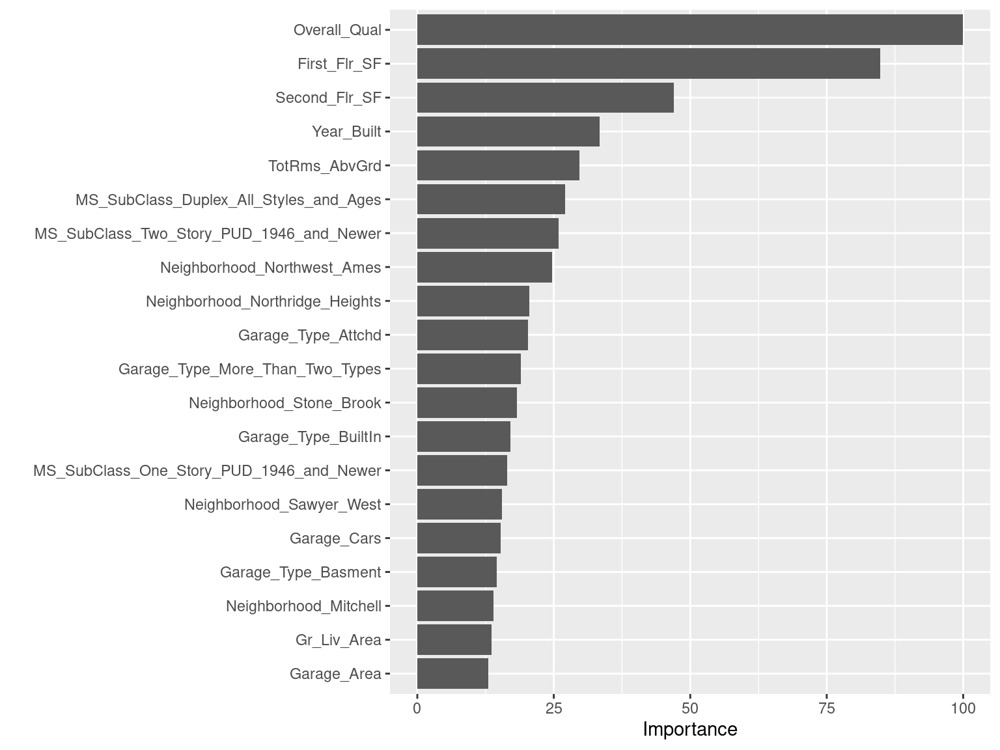
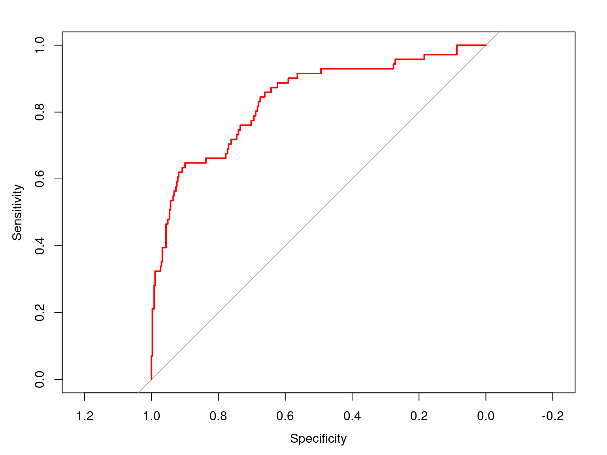

Chapter 6 Review of CV
- KNN Classification: Toy Example
| Obs. | \(X_1\) | \(X_2\) | Y |
|---|---|---|---|
| 1 | 1033 | 1.7 | Red |
| 2 | 1112 | 1.5 | Red |
| 3 | 1500 | 1 | Red |
| 4 | 999 | 1 | Green |
| 5 | 1012 | 1.5 | Green |
| 6 | 1013 | 1 | Red |
| 7 | 1233 | 1 | Green |
| 8 | 1332 | 1 | Red |
Suppose you implement 4-fold CV. What is the size of each training and validation set?
Let’s say the folds are randomly chosen to be observation pairs (2, 3), (4, 7), (1, 8), and (5, 6).
6.1 Data Leakage (A Serious, Common Problem)
Data leakage is when information from outside the training data set is used to create the model. Data leakage often occurs when the data preprocessing task is implemented with CV. To minimize this, feature engineering should be done in isolation of each resampling iteration.
6.2 Data Preprocessing and Feature Enginnering
Data preprocessing and engineering techniques generally refer to the addition, deletion, or transformation of data.
We will cover several fundamental and common preprocessing tasks that can potentially significantly improve modeling performance.
Dealing with zero-variance (zv) and/or near-zero variance (nzv) variables
Imputing missing entries
Label encoding ordinal categorical variables
Standardizing (centering and scaling) numeric predictors
Lumping predictors
One-hot/dummy encoding categorical predictors
6.3 Ames Housing Dataset
ames <- readRDS("AmesHousing.rds") # load dataset
# ames <- ames %>% mutate_if(is.character, as.factor) # convert all character variables to factor variables
sum(is.na(ames)) # check missing values## [1] 1136.4 Ames Housing Dataset
glimpse(ames) # check type of variables, missing entries?## Rows: 881
## Columns: 20
## $ Sale_Price <int> 244000, 213500, 185000, 394432, 190000, 149000, 149900, …
## $ Gr_Liv_Area <int> 2110, 1338, 1187, 1856, 1844, NA, NA, 1069, 1940, 1544, …
## $ Garage_Type <fct> Attchd, Attchd, Attchd, Attchd, Attchd, Attchd, Attchd, …
## $ Garage_Cars <dbl> 2, 2, 2, 3, 2, 2, 2, 2, 3, 3, 2, 3, 3, 2, 2, 2, 3, 2, 2,…
## $ Garage_Area <dbl> 522, 582, 420, 834, 546, 480, 500, 440, 606, 868, 532, 7…
## $ Street <fct> Pave, Pave, Pave, Pave, Pave, Pave, Pave, Pave, Pave, Pa…
## $ Utilities <fct> AllPub, AllPub, AllPub, AllPub, AllPub, AllPub, AllPub, …
## $ Pool_Area <int> 0, 0, 0, 0, 0, 0, 0, 0, 0, 0, 0, 0, 0, 0, 0, 0, 0, 0, 0,…
## $ Neighborhood <fct> North_Ames, Stone_Brook, Gilbert, Stone_Brook, Northwest…
## $ Screen_Porch <int> 0, 0, 0, 0, 0, 0, 0, 165, 0, 0, 0, 0, 0, 0, 0, 0, 0, 0, …
## $ Overall_Qual <fct> Good, Very_Good, Above_Average, Excellent, Above_Average…
## $ Lot_Area <int> 11160, 4920, 7980, 11394, 11751, 11241, 12537, 4043, 101…
## $ Lot_Frontage <dbl> 93, 41, 0, 88, 105, 0, 0, 53, 83, 94, 95, 90, 105, 61, 6…
## $ MS_SubClass <fct> One_Story_1946_and_Newer_All_Styles, One_Story_PUD_1946_…
## $ Misc_Val <int> 0, 0, 500, 0, 0, 700, 0, 0, 0, 0, 0, 0, 0, 0, 0, 0, 0, 0…
## $ Open_Porch_SF <int> 0, 0, 21, 0, 122, 0, 0, 55, 95, 35, 70, 74, 130, 82, 48,…
## $ TotRms_AbvGrd <int> 8, 6, 6, 8, 7, 5, 6, 4, 8, 7, 7, 7, 7, 6, 7, 7, 10, 7, 7…
## $ First_Flr_SF <int> 2110, 1338, 1187, 1856, 1844, 1004, 1078, 1069, 1940, 15…
## $ Second_Flr_SF <int> 0, 0, 0, 0, 0, 0, 0, 0, 0, 0, 0, 0, 563, 0, 886, 656, 11…
## $ Year_Built <int> 1968, 2001, 1992, 2010, 1977, 1970, 1971, 1977, 2009, 20…6.5 Ames Housing Dataset
summary(ames) # check type of variables, missing entries?## Sale_Price Gr_Liv_Area Garage_Type Garage_Cars
## Min. : 34900 Min. : 334 Attchd :514 Min. :0.000
## 1st Qu.:129500 1st Qu.:1118 Basment : 10 1st Qu.:1.000
## Median :160000 Median :1442 BuiltIn : 55 Median :2.000
## Mean :181115 Mean :1495 CarPort : 5 Mean :1.762
## 3rd Qu.:213500 3rd Qu.:1728 Detchd :234 3rd Qu.:2.000
## Max. :755000 Max. :5642 More_Than_Two_Types: 9 Max. :4.000
## NA's :113 No_Garage : 54
## Garage_Area Street Utilities Pool_Area
## Min. : 0.0 Grvl: 4 AllPub:880 Min. : 0.00
## 1st Qu.: 324.0 Pave:877 NoSeWa: 0 1st Qu.: 0.00
## Median : 480.0 NoSewr: 1 Median : 0.00
## Mean : 476.5 Mean : 2.41
## 3rd Qu.: 592.0 3rd Qu.: 0.00
## Max. :1418.0 Max. :576.00
##
## Neighborhood Screen_Porch Overall_Qual Lot_Area
## North_Ames :127 Min. : 0.00 Average :243 Min. : 1300
## College_Creek : 86 1st Qu.: 0.00 Above_Average:217 1st Qu.: 7449
## Old_Town : 83 Median : 0.00 Good :177 Median : 9512
## Northridge_Heights: 52 Mean : 18.11 Very_Good : 99 Mean : 10105
## Somerset : 50 3rd Qu.: 0.00 Below_Average: 83 3rd Qu.: 11526
## Edwards : 49 Max. :490.00 Excellent : 38 Max. :159000
## (Other) :434 (Other) : 24
## Lot_Frontage MS_SubClass Misc_Val
## Min. : 0.00 One_Story_1946_and_Newer_All_Styles :335 Min. : 0.00
## 1st Qu.: 43.00 Two_Story_1946_and_Newer :171 1st Qu.: 0.00
## Median : 63.00 One_and_Half_Story_Finished_All_Ages: 92 Median : 0.00
## Mean : 57.78 One_Story_PUD_1946_and_Newer : 53 Mean : 37.97
## 3rd Qu.: 78.00 Duplex_All_Styles_and_Ages : 40 3rd Qu.: 0.00
## Max. :313.00 One_Story_1945_and_Older : 36 Max. :8300.00
## (Other) :154
## Open_Porch_SF TotRms_AbvGrd First_Flr_SF Second_Flr_SF
## Min. : 0.00 Min. : 2.000 Min. : 334 Min. : 0.0
## 1st Qu.: 0.00 1st Qu.: 5.000 1st Qu.: 877 1st Qu.: 0.0
## Median : 27.00 Median : 6.000 Median :1092 Median : 0.0
## Mean : 49.93 Mean : 6.413 Mean :1171 Mean : 319.6
## 3rd Qu.: 72.00 3rd Qu.: 7.000 3rd Qu.:1426 3rd Qu.: 682.0
## Max. :742.00 Max. :12.000 Max. :4692 Max. :2065.0
##
## Year_Built
## Min. :1875
## 1st Qu.:1954
## Median :1972
## Mean :1971
## 3rd Qu.:2000
## Max. :2010
## 6.6 Ames Housing Dataset
levels(ames$Overall_Qual) # the levels are NOT properly ordered## [1] "Above_Average" "Average" "Below_Average" "Excellent"
## [5] "Fair" "Good" "Poor" "Very_Excellent"
## [9] "Very_Good" "Very_Poor"# relevel the levels
ames$Overall_Qual <- factor(ames$Overall_Qual, levels = c("Very_Poor", "Poor", "Fair", "Below_Average",
"Average", "Above_Average", "Good", "Very_Good",
"Excellent", "Very_Excellent"))
levels(ames$Overall_Qual) # the levels are properly ordered## [1] "Very_Poor" "Poor" "Fair" "Below_Average"
## [5] "Average" "Above_Average" "Good" "Very_Good"
## [9] "Excellent" "Very_Excellent"6.7 Ames Housing Dataset
# split the dataset into training and test sets
set.seed(013123) # set seed
index <- createDataPartition(ames$Sale_Price, p = 0.7, list = FALSE) # 'Sale_Price' is the response
ames_train <- ames[index,] # training data
ames_test <- ames[-index,] # test data6.8 Ames Housing Dataset
# set up the recipe
library(recipes)##
## Attaching package: 'recipes'## The following object is masked from 'package:stringr':
##
## fixed## The following object is masked from 'package:stats':
##
## stepames_recipe <- recipe(Sale_Price ~ ., data = ames_train) # sets up the type and role of variables
ames_recipe$var_info## # A tibble: 20 × 4
## variable type role source
## <chr> <list> <chr> <chr>
## 1 Gr_Liv_Area <chr [2]> predictor original
## 2 Garage_Type <chr [3]> predictor original
## 3 Garage_Cars <chr [2]> predictor original
## 4 Garage_Area <chr [2]> predictor original
## 5 Street <chr [3]> predictor original
## 6 Utilities <chr [3]> predictor original
## 7 Pool_Area <chr [2]> predictor original
## 8 Neighborhood <chr [3]> predictor original
## 9 Screen_Porch <chr [2]> predictor original
## 10 Overall_Qual <chr [3]> predictor original
## 11 Lot_Area <chr [2]> predictor original
## 12 Lot_Frontage <chr [2]> predictor original
## 13 MS_SubClass <chr [3]> predictor original
## 14 Misc_Val <chr [2]> predictor original
## 15 Open_Porch_SF <chr [2]> predictor original
## 16 TotRms_AbvGrd <chr [2]> predictor original
## 17 First_Flr_SF <chr [2]> predictor original
## 18 Second_Flr_SF <chr [2]> predictor original
## 19 Year_Built <chr [2]> predictor original
## 20 Sale_Price <chr [2]> outcome original6.9 Zero-Variance (zv) and/or Near-Zero Variance (nzv) Variables
A rule of thumb for detecting near-zero variance features is:
The fraction of unique values over the sample size is low (say \(\le 10\%\)).
The ratio of the frequency of the most prevalent value to the frequency of the second most prevalent value is large (say \(\ge 20\%\)).
6.10 Zero-Variance (zv) and/or Near-Zero Variance (nzv) Variables
# investigate zv/nzv predictors
nearZeroVar(ames_train, saveMetrics = TRUE) # check which predictors are zv/nzv## freqRatio percentUnique zeroVar nzv
## Sale_Price 1.250000 61.8122977 FALSE FALSE
## Gr_Liv_Area 1.666667 68.7702265 FALSE FALSE
## Garage_Type 2.312102 1.1326861 FALSE FALSE
## Garage_Cars 1.922619 0.8090615 FALSE FALSE
## Garage_Area 2.105263 44.0129450 FALSE FALSE
## Street 153.500000 0.3236246 FALSE TRUE
## Utilities 617.000000 0.3236246 FALSE TRUE
## Pool_Area 614.000000 0.8090615 FALSE TRUE
## Neighborhood 1.655172 4.2071197 FALSE FALSE
## Screen_Porch 140.250000 6.9579288 FALSE TRUE
## Overall_Qual 1.176871 1.6181230 FALSE FALSE
## Lot_Area 1.100000 82.0388350 FALSE FALSE
## Lot_Frontage 1.485294 15.0485437 FALSE FALSE
## MS_SubClass 1.892562 2.4271845 FALSE FALSE
## Misc_Val 149.000000 2.2653722 FALSE TRUE
## Open_Porch_SF 20.142857 22.6537217 FALSE FALSE
## TotRms_AbvGrd 1.212329 1.7799353 FALSE FALSE
## First_Flr_SF 2.333333 70.8737864 FALSE FALSE
## Second_Flr_SF 90.750000 34.4660194 FALSE FALSE
## Year_Built 1.214286 15.8576052 FALSE FALSE6.11 Zero-Variance (zv) and/or Near-Zero Variance (nzv) Variables
blueprint <- ames_recipe %>%
step_nzv(Street, Utilities, Pool_Area, Screen_Porch, Misc_Val) # filter out zv/nzv predictors6.12 Imputing Missing Entries
Possible imputation techniques:
step_impute_medianstep_impute_meanstep_impute_knnstep_impute_mode
6.13 Imputing Missing Entries
summary(ames_train) # check which predictors have missing entries## Sale_Price Gr_Liv_Area Garage_Type Garage_Cars
## Min. : 39300 Min. : 334 Attchd :363 Min. :0.000
## 1st Qu.:129100 1st Qu.:1114 Basment : 6 1st Qu.:1.000
## Median :160000 Median :1446 BuiltIn : 41 Median :2.000
## Mean :180748 Mean :1489 CarPort : 5 Mean :1.746
## 3rd Qu.:213408 3rd Qu.:1742 Detchd :157 3rd Qu.:2.000
## Max. :745000 Max. :4476 More_Than_Two_Types: 6 Max. :4.000
## NA's :77 No_Garage : 40
## Garage_Area Street Utilities Pool_Area
## Min. : 0.0 Grvl: 4 AllPub:617 Min. : 0.000
## 1st Qu.: 320.5 Pave:614 NoSeWa: 0 1st Qu.: 0.000
## Median : 482.0 NoSewr: 1 Median : 0.000
## Mean : 473.4 Mean : 2.659
## 3rd Qu.: 587.5 3rd Qu.: 0.000
## Max. :1348.0 Max. :576.000
##
## Neighborhood Screen_Porch Overall_Qual Lot_Area
## North_Ames : 96 Min. : 0.00 Average :173 Min. : 1491
## College_Creek : 58 1st Qu.: 0.00 Above_Average:147 1st Qu.: 7572
## Old_Town : 54 Median : 0.00 Good :121 Median : 9582
## Sawyer : 39 Mean : 17.42 Very_Good : 72 Mean : 9830
## Northridge_Heights: 38 3rd Qu.: 0.00 Below_Average: 61 3rd Qu.:11500
## Edwards : 36 Max. :410.00 Excellent : 25 Max. :50102
## (Other) :297 (Other) : 19
## Lot_Frontage MS_SubClass Misc_Val
## Min. : 0.0 One_Story_1946_and_Newer_All_Styles :229 Min. : 0.00
## 1st Qu.: 44.0 Two_Story_1946_and_Newer :121 1st Qu.: 0.00
## Median : 64.0 One_and_Half_Story_Finished_All_Ages: 59 Median : 0.00
## Mean : 58.4 One_Story_PUD_1946_and_Newer : 37 Mean : 43.73
## 3rd Qu.: 79.0 Duplex_All_Styles_and_Ages : 33 3rd Qu.: 0.00
## Max. :182.0 Two_Story_1945_and_Older : 27 Max. :8300.00
## (Other) :112
## Open_Porch_SF TotRms_AbvGrd First_Flr_SF Second_Flr_SF
## Min. : 0.00 Min. : 2.000 Min. : 334 Min. : 0.0
## 1st Qu.: 0.00 1st Qu.: 5.000 1st Qu.: 875 1st Qu.: 0.0
## Median : 24.50 Median : 6.000 Median :1072 Median : 0.0
## Mean : 47.29 Mean : 6.422 Mean :1159 Mean : 320.1
## 3rd Qu.: 69.00 3rd Qu.: 7.000 3rd Qu.:1395 3rd Qu.: 683.8
## Max. :742.00 Max. :12.000 Max. :2674 Max. :2065.0
##
## Year_Built
## Min. :1875
## 1st Qu.:1954
## Median :1972
## Mean :1971
## 3rd Qu.:2000
## Max. :2009
## 6.14 Imputing Missing Entries
blueprint <- ames_recipe %>%
step_nzv(Street, Utilities, Pool_Area, Screen_Porch, Misc_Val) %>% # filter out zv/nzv predictors
step_impute_mean(Gr_Liv_Area) # impute missing entries6.15 Label Encoding Ordinal Categorical Variables
Label encoding is a pure numeric conversion of the levels of a categorical variable. If a categorical variable is a factor and it has pre-specified levels then the numeric conversion will be in level order. If no levels are specified, the encoding will be based on alphabetical order.
We should be careful with label encoding unordered categorical features because most models will treat them as ordered numeric features
6.16 Label Encoding Ordinal Categorical Variables
# investigate predictors with possible ordering (label encoding)
ames_train %>% count(Overall_Qual)## # A tibble: 10 × 2
## Overall_Qual n
## <fct> <int>
## 1 Very_Poor 1
## 2 Poor 2
## 3 Fair 7
## 4 Below_Average 61
## 5 Average 173
## 6 Above_Average 147
## 7 Good 121
## 8 Very_Good 72
## 9 Excellent 25
## 10 Very_Excellent 96.17 Label Encoding Ordinal Categorical Variables
blueprint <- ames_recipe %>%
step_nzv(Street, Utilities, Pool_Area, Screen_Porch, Misc_Val) %>% # filter out zv/nzv predictors
step_impute_mean(Gr_Liv_Area) %>% # impute missing entries
step_integer(Overall_Qual) # numeric conversion of levels of the predictors6.18 Standardizing (centering and scaling) Numeric Predictors
Standardizing features includes centering and scaling so that numeric variables have zero mean and unit variance, which provides a common comparable unit of measure across all the variables.
Before centering and scaling, it is better to remove zv/nzv variables, and perform necessary imputation and label encoding.
blueprint <- ames_recipe %>%
step_nzv(Street, Utilities, Pool_Area, Screen_Porch, Misc_Val) %>% # filter out zv/nzv predictors
step_impute_mean(Gr_Liv_Area) %>% # impute missing entries
step_integer(Overall_Qual) %>% # numeric conversion of levels of the predictors
step_center(all_numeric(), -all_outcomes()) %>% # center (subtract mean) all numeric predictors
step_scale(all_numeric(), -all_outcomes()) # scale (divide by standard deviation) all numeric predictors6.19 Lumping Predictors
Sometimes features (numerical or categorical) will contain levels that have very few observations (decided by a threshold). It can be beneficial to collapse, or “lump” these into a lesser number of categories.
# lumping categorical predictors if need be
ames_train %>% count(Neighborhood) %>% arrange(n) # check frequency of categoriesblueprint <- ames_recipe %>%
step_nzv(Street, Utilities, Pool_Area, Screen_Porch, Misc_Val) %>% # filter out zv/nzv predictors
step_impute_mean(Gr_Liv_Area) %>% # impute missing entries
step_integer(Overall_Qual) %>% # numeric conversion of levels of the predictors
step_center(all_numeric(), -all_outcomes()) %>% # center (subtract mean) all numeric predictors
step_scale(all_numeric(), -all_outcomes()) %>% # scale (divide by standard deviation) all numeric predictors
step_other(Neighborhood, threshold = 0.01, other = "other") # lumping required predictors6.20 One-hot/dummy Encoding Categorical Predictors
Figure 6.1: Adapted from Hands-on Machine Learning with R, Bradley Boehmke & Brandon Greenwell
6.21 One-hot/dummy Encoding Categorical Predictors
blueprint <- ames_recipe %>%
step_nzv(Street, Utilities, Pool_Area, Screen_Porch, Misc_Val) %>% # filter out zv/nzv predictors
step_impute_mean(Gr_Liv_Area) %>% # impute missing entries
step_integer(Overall_Qual) %>% # numeric conversion of levels of the predictors
step_center(all_numeric(), -all_outcomes()) %>% # center (subtract mean) all numeric predictors
step_scale(all_numeric(), -all_outcomes()) %>% # scale (divide by standard deviation) all numeric predictors
step_other(Neighborhood, threshold = 0.01, other = "other") %>% # lumping required predictors
step_dummy(all_nominal(), one_hot = TRUE) # one-hot/dummy encode nominal categorical predictors6.22 Preprocessing Steps
A suggested order of potential steps that should work for most problems:
Filter out zero or near-zero variance features.
Perform imputation if required.
Label encode ordinal categorical features.
Normalize/Standardize (center and scale) numeric features.
Lump certain features if required.
One-hot or dummy encode categorical features.
6.23 Preprocessing With recipes Package
There are three main steps in creating and applying feature engineering with recipes:
recipe: where you define your feature engineering steps to create your blueprint.
prepare: estimate feature engineering parameters based on training data.
bake: apply the blueprint to new data.
6.24 Preprocessing With recipes Package
# finally, after all preprocessing steps have been decided set up the overall blueprint
ames_recipe <- recipe(Sale_Price ~ ., data = ames_train)
blueprint <- ames_recipe %>%
step_nzv(Street, Utilities, Pool_Area, Screen_Porch, Misc_Val) %>%
step_impute_mean(Gr_Liv_Area) %>%
step_integer(Overall_Qual) %>%
step_center(all_numeric(), -all_outcomes()) %>%
step_scale(all_numeric(), -all_outcomes()) %>%
step_other(Neighborhood, threshold = 0.01, other = "other") %>%
step_dummy(all_nominal(), one_hot = TRUE)
prepare <- prep(blueprint, data = ames_train) # estimate feature engineering parameters based on training data
baked_train <- bake(prepare, new_data = ames_train) # apply the blueprint to training data for building final/optimal model
baked_test <- bake(prepare, new_data = ames_test) # apply the blueprint to test data for future use6.25 Training Model
- A KNN model
# perform CV to tune K
set.seed(013123)
cv_specs <- trainControl(method = "cv", number = 5) # 5-fold CV (no repeats)
k_grid <- expand.grid(k = seq(1, 10, by = 2))
knn_fit <- train(blueprint,
data = ames_train,
method = "knn",
trControl = cv_specs,
tuneGrid = k_grid,
metric = "RMSE")
knn_fit## k-Nearest Neighbors
##
## 618 samples
## 19 predictor
##
## Recipe steps: nzv, impute_mean, integer, center, scale, other, dummy
## Resampling: Cross-Validated (5 fold)
## Summary of sample sizes: 494, 494, 495, 494, 495
## Resampling results across tuning parameters:
##
## k RMSE Rsquared MAE
## 1 42573.14 0.7499158 27889.19
## 3 35686.37 0.8233707 23448.95
## 5 33973.09 0.8432532 22186.60
## 7 34439.17 0.8446435 22479.38
## 9 35202.64 0.8399091 22419.31
##
## RMSE was used to select the optimal model using the smallest value.
## The final value used for the model was k = 5.6.27 Training Model
- A linear regression model
lm_fit <- train(blueprint,
data = ames_train,
method = "lm",
trControl = cv_specs,
metric = "RMSE")## Warning in predict.lm(modelFit, newdata): prediction from a rank-deficient fit
## may be misleading
## Warning in predict.lm(modelFit, newdata): prediction from a rank-deficient fit
## may be misleading
## Warning in predict.lm(modelFit, newdata): prediction from a rank-deficient fit
## may be misleading
## Warning in predict.lm(modelFit, newdata): prediction from a rank-deficient fit
## may be misleading
## Warning in predict.lm(modelFit, newdata): prediction from a rank-deficient fit
## may be misleadinglm_fit## Linear Regression
##
## 618 samples
## 19 predictor
##
## Recipe steps: nzv, impute_mean, integer, center, scale, other, dummy
## Resampling: Cross-Validated (5 fold)
## Summary of sample sizes: 495, 494, 495, 494, 494
## Resampling results:
##
## RMSE Rsquared MAE
## 32755.85 0.8502331 22609.88
##
## Tuning parameter 'intercept' was held constant at a value of TRUE6.28 Final Model and Test Set Error
# refit the final/optimal model using ALL modified training data, and obtain estimate of prediction error from modified test data
final_model <- lm(Sale_Price ~ ., data = baked_train) # build final model
final_preds <- predict(final_model, newdata = baked_test) # obtain predictions on test data## Warning in predict.lm(final_model, newdata = baked_test): prediction from a
## rank-deficient fit may be misleadingsqrt(mean((baked_test$Sale_Price - final_preds)^2)) # calculate test set RMSE## [1] 47839.786.29 Variable Importance
# variable importance
library(vip)
vip(object = lm_fit, # CV object
num_features = 20, # maximum number of predictors to show importance for
method = "model") # model-specific VI scores
6.30 Your Turn!!!
You will work with the attrition data from the modeldata package. The task is to predict Attrition (Yes/No) using the rest of the variables in the data (predictors/features).
library(modeldata) # load package
data(attrition) # load datasetStep 1: Investigate the dataset
What are the types of features? - categorical or numeric
If categorical, are they ordinal or nominal? If ordinal, are their levels in appropriate order? You can use the
levelsfunction to check the ordering.Are there any features with missing entries?
Are there any zv/nzv features?
Step 2: Split the data into training and test sets (70-30 split)
Step 3: Perform required data preprocessing and create the blueprint. If using
step_dummy(), setone_hot = FALSE.Step 4: Implement 5-fold CV (no repeats) to compare the performance of the following models. Use
metric = "Accuracy".a logistic regression model (
method = "glm"andfamily = "binomial")a KNN classifier with the optimal
Kchosen by CV (method = "knn"). Use a grid ofKvalues \(1, 2, \ldots, 10\).
What is the optimal K chosen? How do the models compare in terms of the CV accuracies?
- Step 5: Build your final optimal model. Obtain probability and class label predictions for the test set (use threshold of 0.5). Create the corresponding confusion matrix and report the test set accuracy. Also, create the ROC curve for the optimal model and report the AUC.
6.31 Your Turn!!! Step 1
glimpse(attrition) # types of variables## Rows: 1,470
## Columns: 31
## $ Age <int> 41, 49, 37, 33, 27, 32, 59, 30, 38, 36, 35, 2…
## $ Attrition <fct> Yes, No, Yes, No, No, No, No, No, No, No, No,…
## $ BusinessTravel <fct> Travel_Rarely, Travel_Frequently, Travel_Rare…
## $ DailyRate <int> 1102, 279, 1373, 1392, 591, 1005, 1324, 1358,…
## $ Department <fct> Sales, Research_Development, Research_Develop…
## $ DistanceFromHome <int> 1, 8, 2, 3, 2, 2, 3, 24, 23, 27, 16, 15, 26, …
## $ Education <ord> College, Below_College, College, Master, Belo…
## $ EducationField <fct> Life_Sciences, Life_Sciences, Other, Life_Sci…
## $ EnvironmentSatisfaction <ord> Medium, High, Very_High, Very_High, Low, Very…
## $ Gender <fct> Female, Male, Male, Female, Male, Male, Femal…
## $ HourlyRate <int> 94, 61, 92, 56, 40, 79, 81, 67, 44, 94, 84, 4…
## $ JobInvolvement <ord> High, Medium, Medium, High, High, High, Very_…
## $ JobLevel <int> 2, 2, 1, 1, 1, 1, 1, 1, 3, 2, 1, 2, 1, 1, 1, …
## $ JobRole <fct> Sales_Executive, Research_Scientist, Laborato…
## $ JobSatisfaction <ord> Very_High, Medium, High, High, Medium, Very_H…
## $ MaritalStatus <fct> Single, Married, Single, Married, Married, Si…
## $ MonthlyIncome <int> 5993, 5130, 2090, 2909, 3468, 3068, 2670, 269…
## $ MonthlyRate <int> 19479, 24907, 2396, 23159, 16632, 11864, 9964…
## $ NumCompaniesWorked <int> 8, 1, 6, 1, 9, 0, 4, 1, 0, 6, 0, 0, 1, 0, 5, …
## $ OverTime <fct> Yes, No, Yes, Yes, No, No, Yes, No, No, No, N…
## $ PercentSalaryHike <int> 11, 23, 15, 11, 12, 13, 20, 22, 21, 13, 13, 1…
## $ PerformanceRating <ord> Excellent, Outstanding, Excellent, Excellent,…
## $ RelationshipSatisfaction <ord> Low, Very_High, Medium, High, Very_High, High…
## $ StockOptionLevel <int> 0, 1, 0, 0, 1, 0, 3, 1, 0, 2, 1, 0, 1, 1, 0, …
## $ TotalWorkingYears <int> 8, 10, 7, 8, 6, 8, 12, 1, 10, 17, 6, 10, 5, 3…
## $ TrainingTimesLastYear <int> 0, 3, 3, 3, 3, 2, 3, 2, 2, 3, 5, 3, 1, 2, 4, …
## $ WorkLifeBalance <ord> Bad, Better, Better, Better, Better, Good, Go…
## $ YearsAtCompany <int> 6, 10, 0, 8, 2, 7, 1, 1, 9, 7, 5, 9, 5, 2, 4,…
## $ YearsInCurrentRole <int> 4, 7, 0, 7, 2, 7, 0, 0, 7, 7, 4, 5, 2, 2, 2, …
## $ YearsSinceLastPromotion <int> 0, 1, 0, 3, 2, 3, 0, 0, 1, 7, 0, 0, 4, 1, 0, …
## $ YearsWithCurrManager <int> 5, 7, 0, 0, 2, 6, 0, 0, 8, 7, 3, 8, 3, 2, 3, …Numerical variables are represented as <int>, categorical variables are represented as either <ord> or <fct>.
6.32 Your Turn!!! Step 1
# checking the levels of ordinal variables
levels(attrition$BusinessTravel)## [1] "Non-Travel" "Travel_Frequently" "Travel_Rarely"levels(attrition$Education)## [1] "Below_College" "College" "Bachelor" "Master"
## [5] "Doctor"levels(attrition$EnvironmentSatisfaction)## [1] "Low" "Medium" "High" "Very_High"levels(attrition$JobInvolvement)## [1] "Low" "Medium" "High" "Very_High"levels(attrition$JobSatisfaction)## [1] "Low" "Medium" "High" "Very_High"levels(attrition$PerformanceRating)## [1] "Low" "Good" "Excellent" "Outstanding"levels(attrition$RelationshipSatisfaction)## [1] "Low" "Medium" "High" "Very_High"levels(attrition$WorkLifeBalance)## [1] "Bad" "Good" "Better" "Best"6.33 Your Turn!!! Step 1
# reorder levels of 'BusinessTravel'
attrition$BusinessTravel <- factor(attrition$BusinessTravel, levels = c("Non-Travel", "Travel_Rarely", "Travel_Frequently"))
levels(attrition$BusinessTravel)## [1] "Non-Travel" "Travel_Rarely" "Travel_Frequently"6.35 Your Turn!!! Step 1
nearZeroVar(attrition, saveMetrics = TRUE)## freqRatio percentUnique zeroVar nzv
## Age 1.012987 2.9251701 FALSE FALSE
## Attrition 5.202532 0.1360544 FALSE FALSE
## BusinessTravel 3.765343 0.2040816 FALSE FALSE
## DailyRate 1.200000 60.2721088 FALSE FALSE
## Department 2.154709 0.2040816 FALSE FALSE
## DistanceFromHome 1.014423 1.9727891 FALSE FALSE
## Education 1.437186 0.3401361 FALSE FALSE
## EducationField 1.306034 0.4081633 FALSE FALSE
## EnvironmentSatisfaction 1.015695 0.2721088 FALSE FALSE
## Gender 1.500000 0.1360544 FALSE FALSE
## HourlyRate 1.035714 4.8299320 FALSE FALSE
## JobInvolvement 2.314667 0.2721088 FALSE FALSE
## JobLevel 1.016854 0.3401361 FALSE FALSE
## JobRole 1.116438 0.6122449 FALSE FALSE
## JobSatisfaction 1.038462 0.2721088 FALSE FALSE
## MaritalStatus 1.431915 0.2040816 FALSE FALSE
## MonthlyIncome 1.333333 91.7687075 FALSE FALSE
## MonthlyRate 1.000000 97.0748299 FALSE FALSE
## NumCompaniesWorked 2.644670 0.6802721 FALSE FALSE
## OverTime 2.533654 0.1360544 FALSE FALSE
## PercentSalaryHike 1.004785 1.0204082 FALSE FALSE
## PerformanceRating 5.504425 0.1360544 FALSE FALSE
## RelationshipSatisfaction 1.062500 0.2721088 FALSE FALSE
## StockOptionLevel 1.058725 0.2721088 FALSE FALSE
## TotalWorkingYears 1.616000 2.7210884 FALSE FALSE
## TrainingTimesLastYear 1.114053 0.4761905 FALSE FALSE
## WorkLifeBalance 2.595930 0.2721088 FALSE FALSE
## YearsAtCompany 1.146199 2.5170068 FALSE FALSE
## YearsInCurrentRole 1.524590 1.2925170 FALSE FALSE
## YearsSinceLastPromotion 1.627451 1.0884354 FALSE FALSE
## YearsWithCurrManager 1.307985 1.2244898 FALSE FALSE6.36 Your Turn!!! Step 2
# split data
set.seed(013123)
train_index <- createDataPartition(attrition$Attrition, p = 0.7, list = FALSE)
attrition_train <- attrition[train_index, ]
attrition_test <- attrition[-train_index, ]6.37 Your Turn!!! Step 3
# create recipe, blueprint, prepare, and bake
attrition_recipe <- recipe(formula = Attrition ~ ., data = attrition_train) # sets up the type and role of variables
blueprint <- attrition_recipe %>%
step_integer(BusinessTravel, Education, EnvironmentSatisfaction, JobInvolvement,
JobSatisfaction, PerformanceRating, RelationshipSatisfaction,
WorkLifeBalance) %>%
step_center(all_numeric()) %>%
step_scale(all_numeric()) %>%
step_dummy(all_nominal(), -all_outcomes(), one_hot = FALSE)
prepare <- prep(blueprint, data = attrition_train) # estimate feature engineering parameters based on training data
baked_train <- bake(prepare, new_data = attrition_train) # apply the blueprint to training data for building final/optimal model
baked_test <- bake(prepare, new_data = attrition_test) # apply the blueprint to test data for future use6.38 Your Turn!!! Step 4
# perform CV
set.seed(013123)
cv_specs <- trainControl(method = "cv", number = 5) # 5-fold CV (no repeats)
# CV with logistic regression
logistic_fit <- train(blueprint,
data = attrition_train,
method = "glm",
family = "binomial",
trControl = cv_specs,
metric = "Accuracy")
logistic_fit## Generalized Linear Model
##
## 1030 samples
## 30 predictor
## 2 classes: 'No', 'Yes'
##
## Recipe steps: integer, center, scale, dummy
## Resampling: Cross-Validated (5 fold)
## Summary of sample sizes: 824, 823, 825, 824, 824
## Resampling results:
##
## Accuracy Kappa
## 0.870915 0.45285546.39 Your Turn!!! Step 4
# CV with KNN
set.seed(013123)
k_grid <- expand.grid(k = seq(1, 10, by = 1))
knn_fit <- train(blueprint,
data = attrition_train,
method = "knn",
trControl = cv_specs,
tuneGrid = k_grid,
metric = "Accuracy")
knn_fit## k-Nearest Neighbors
##
## 1030 samples
## 30 predictor
## 2 classes: 'No', 'Yes'
##
## Recipe steps: integer, center, scale, dummy
## Resampling: Cross-Validated (5 fold)
## Summary of sample sizes: 824, 823, 825, 824, 824
## Resampling results across tuning parameters:
##
## k Accuracy Kappa
## 1 0.7835261 0.13378621
## 2 0.7873814 0.14344232
## 3 0.8398231 0.20441187
## 4 0.8310899 0.17242779
## 5 0.8504841 0.17107000
## 6 0.8446258 0.15021424
## 7 0.8465958 0.13835761
## 8 0.8485517 0.13591269
## 9 0.8427169 0.07579273
## 10 0.8456343 0.08956634
##
## Accuracy was used to select the optimal model using the largest value.
## The final value used for the model was k = 5.6.41 Your Turn!!! Step 5
# build final optimal model and obtain predictions on test set
final_model <- glm(Attrition ~ ., data = baked_train, family = binomial) # build final model
final_model_prob_preds <- predict(object = final_model, newdata = baked_test, type = "response") # obtain probability predictions on test data
threshold <- 0.5
final_model_class_preds <- factor(ifelse(final_model_prob_preds > threshold, "Yes", "No")) 6.42 Your Turn!!! Step 5
# create confusion matrix
confusionMatrix(data = relevel(final_model_class_preds, ref = "Yes"),
reference = relevel(baked_test$Attrition, ref = "Yes")) ## Confusion Matrix and Statistics
##
## Reference
## Prediction Yes No
## Yes 28 14
## No 43 355
##
## Accuracy : 0.8705
## 95% CI : (0.8354, 0.9004)
## No Information Rate : 0.8386
## P-Value [Acc > NIR] : 0.0372769
##
## Kappa : 0.4268
##
## Mcnemar's Test P-Value : 0.0002083
##
## Sensitivity : 0.39437
## Specificity : 0.96206
## Pos Pred Value : 0.66667
## Neg Pred Value : 0.89196
## Prevalence : 0.16136
## Detection Rate : 0.06364
## Detection Prevalence : 0.09545
## Balanced Accuracy : 0.67821
##
## 'Positive' Class : Yes
## 6.43 Your Turn!!! Step 5
# create ROC cuvre and compute AUC
roc_object <- roc(response = baked_test$Attrition, predictor = final_model_prob_preds)## Setting levels: control = No, case = Yes## Setting direction: controls < casesplot(roc_object, col = "red")
auc(roc_object)## Area under the curve: 0.8361